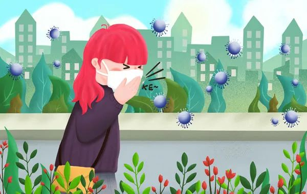
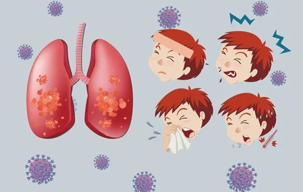
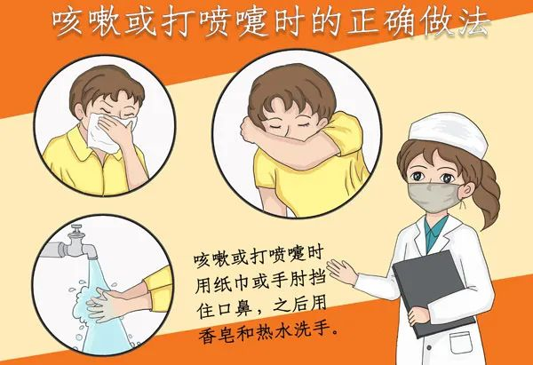

秦文君：上海守城守家记
原文链接 备份链接 难以横刀立马，去前方救人性命，但可以自救，去思考该做的，能做的。 这次特殊的疫情，打乱了无数中国人心心念念的佳节，一段本该自在的长假变了色。从1月20日这天起，我和先生忙着取消亲友们的聚餐，退掉预定好的车票和宾馆。女儿 …
中国是文明古国，无论“唾”还是“咳”，先人都早早地有了规范，明令禁止乱唾。

冲突的发生非常偶然。
那天麦德龙超市结账通道人人都戴着口罩，突然人堆里一位老爷叔拉下口罩就是一顿暴咳，那暴咳绵长而剧烈，末了还风箱似地抽足气，期待感十足地闭上眼睛——仰天转颈“啊啐！”一连三个大喷嚏。
乖乖，虾腰双浇宽汤面碗底还滑出了三只荷包蛋！
人群中弹似地屏息，刹那静默后，立刻爆发出无数的怒斥并汇成了咆哮的海洋，那正是2月中旬之时，一群狂怒的小伙子直接对老爷叔爆了粗口……
你咳嗽也罢喷嚏也罢，把口罩特地拉下来无差别左右狂扫未免太过分了吧，事过多日，我犹然觉得外衣还滑叽叽地“馋吐水”嗒嗒滴。
宅家的日子既然漫长，便乘机考究了一下唾咳之道。
病从口入，秽从口出，口腔原是极忙的，也是极“脏”的。唾液本来无色无味，但氧化后颇有异味，个别人特别臭，我们通常叫“臭嘴巴”。每个人孩提时就明白了，恃其为战斗武器庶可披靡，谁小时候没有唾来唾去的呢？但形诸文字的，最早还是文言名篇《触龙说赵太后》：“赵太后新用事，秦急攻之。赵氏求救于齐。齐曰：‘必长安君(赵太后幼子)为质，兵乃出。’太后不肯，大臣强谏，太后明谓左右曰：‘有复言令长安君为质者，老妇必唾其面。’”以前读到这里常想：“伊唾得到？”老太垂帘高坐，言事的大臣离她起码七步，难不成还走上去凑近了唾？现在明白了，大家都忌讳唾沫之秽，老太借势宣示而已，可见唾沫的“秽势”足以吓阻不同意见，李白有诗“咳唾落九天，随风化珠玉”，我是疑其变态的，阿娇再怎么“娇”，其口水总不见得是龙涎香吧，还是蒲松龄实在，《聊斋》里宋定伯捉鬼，鬼变羊后怕其再变回去，定伯对它连唾几口“馋吐水”而办成了铁案，可见口水的威力。《隋书》称：北周伊娄谦使北齐时，因高遵的泄密，被北齐拘留。后来周武帝逮住高遵，交给伊娄谦任意处置。伊请赦之。周武帝便说：“卿可聚众唾其面，令知愧也。”周武帝宇文邕乃整个南北朝时期少有的明君，以“群唾”羞辱臣下，算是一大发明。相形之下，“全民唾秦桧”的态势才叫一个蔚为壮观。据《燕京岁时记》称：元仁宗延佑年间在大都(北京)为岳飞设神位，“阶前有秦桧跪像，见者莫不唾之，已不辨面目矣。”又据《柳南随笔》记载：明成化年间进士周木在浙江任上时，于钱塘修建了岳武穆墓，并铸秦桧跪像，“供游人笞击。”后来不知何时何人发起，改向秦桧跪像吐痰泄愤，并美称为“义痰”。

用“义痰”表示义愤，论情可以理解，但论理我是极其反感的，那些跪像我小时见过，可谓“天下第一恶心之物”，痰垢累累板结，油酥大饼甚或香港脚一只；唾沫层层风干，边边角角都蝉翼般翘了起来，那个脏我敢说是杭州城最大的“病毒宿主”，各地的“义喉”把各方的病毒都带了过来“交叉变异”，则“义痰”之义，对跪像固然正义，但对公众健康却大不“义”，恨一个人总不能恨到如此不讲卫生吧。由此忽然细想了“痰”。成书于战国的《灵枢》称人体五脏所主之液为汗、泣、涕、唾、涎五种。不提“痰”。再找东汉的《说文解字》居然也找不到“痰”字，痰去哪了？一直找到东晋葛洪的《抱朴子》才找到“甘遂、葶苈之逐痰癖”，这应该是最早的“痰”字了，当然，中医里的“痰”并非只指唾咳之痰，而是指人体津液的异常积聚，我们决不能据此推断东晋之前，人皆“无痰”，那唾咳之“痰”无非混入唾、涎之称了罢。
中国是文明古国，无论“唾”还是“咳”，我们的先人都早早地有了规范，明令禁止随地乱唾。《大戴礼记·保傅》称：“天子处位不端，受业不敬，安顾（动静举止）、咳唾……凡此其属太保之任也。”就算周朝天子也不能随意唾咳，必须合乎礼仪，“咳唾教练”就是太保。《礼记·内则》更有“在父母姑舅之所，不敢唾涕（吐痰与擤鼻涕），父母唾涕不见”的规定，而一旦违反，像麦德龙老爷叔般地恣意狂喷，则后果可能很严重，甚至有不测之祸，《魏书·李栗传》称：北魏左将军李栗“性简慢。矜宠，不率（守）礼度。每在太祖(拓跋珪)面前舒放倨傲，任情咳唾。太祖积其宿过，天兴三年诛之。”注意“任情”两字，那就是唾咳时，不分场合，率性而为，大抵是随地吐吐，鞋底揩揩，结果皇帝和他总算账，要了他脑袋。同样是《魏书》载：杨津“少端紧，以器度见称……文明太后临朝。津久侍左右，忽咳逆失声，遂吐数升，藏衣袖。太后闻声，阅而不见。问其故，具以实告。遂以敬慎见知，赐缣百匹，迁符玺郎中。”咳嗽虽说和私情一样是藏不住的，但就像世卫组织提倡的“赶紧捂嘴”呀，这位仁兄暴咳时都吐入了衣袖，宁可自污，也不害人，结果受到嘉奖，缣是细密的绢，被奖了一百匹，还升官，此痰可谓金痰矣！
《马可波罗游记》第十三章谈到元世祖的宫廷宴会：“皇帝左右侍候和办理饮食的许多人，都必须用美丽的面纱或绸巾遮住鼻子和嘴，防止他们呼出的气息，触及宴享的食物。”
如果没有夸张，可以认为最早的口罩是元世祖倡导的了，而明朝，对随意咳唾已直接发布敕令，违者严惩了。《明史·礼志》记载：大明宣德七年，“大祀南郊，帝御斋宫。命内官内使，饮酒食荤，入坛唾地者，皆罪之。司礼监纵容者同罪。”
包庇者都要连坐。据说这是世界上最早最严厉的禁唾令。
又想到“麦德龙老爷叔”了。近日报载女乘客故意对空姐暴咳，下一秒直接被锁喉压制。想想他的“虾腰双浇宽汤面碗底再滑三只荷包蛋”，我为他庆幸，那一天，大家对他还算是客气的呢。

关于我们：
本公众号乃上海发行量最大的报纸《新民晚报》副刊《夜光杯》的官方微信，《夜光杯》是中国历史最悠久的报纸副刊，在微信平台，我们将以全新的面貌继续陪伴您。欢迎免费订阅，我们将每日精选两篇新鲜出炉的佳作推送到您的手机。所有文章皆为《夜光杯》作者原创，未经允许不得转载。
点击下面的篇目链接，可重读夜光杯微信公众号2月高点击率美文：
原文链接 备份链接 难以横刀立马，去前方救人性命，但可以自救，去思考该做的，能做的。 这次特殊的疫情，打乱了无数中国人心心念念的佳节，一段本该自在的长假变了色。从1月20日这天起，我和先生忙着取消亲友们的聚餐，退掉预定好的车票和宾馆。女儿 …
原文链接 备份链接 从来没想到，居然有一天，我会在流水线上生产一天的口罩。 在我对自己的职业规划中，从来没有想到过，居然有一天我会在流水线上生产一天的口罩。 口罩在生活中，随处可见，如果没有这次疫情，绝大部分的人都不太会去关注我们平时戴的 …
原文链接 备份链接 记者 | 刘雨静 编辑 | 牙韩翔 “ 由于口罩紧缺，微商和微信群卖口罩开始在美国华人中流行起来，各色微信群成了人们互通有无的渠道。 ” 美国新冠肺炎疫情正开始全面扩散，卫生用品在美国也出现有价无市的情况。早前有人在社 …
原文链接 备份链接 在五十多天的隔离里，这不是最好的一天，也不是最坏的一天，这是最典型的一天。 这不是最坏的一天，在五十多天的隔离里。 这不是最好的一天，在五十多天的隔离里。 五十多天往六十天奔了，哪一天解封？还是一个变数。医院还有上万确 …
原文链接 备份链接 随遇，或者不随遇，经每一次日常里的无常，培植日常的力量。 不存侥幸心，熟悉的亲友邻居们年前安排好的旅游都取消了，广州的，浙江的，法国的，损失也就损失了，安全乃第一要素。家母说大家各自保平安，待清明时节再团聚吧。心念的展 …